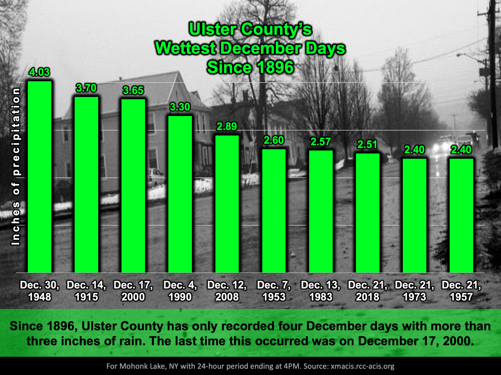
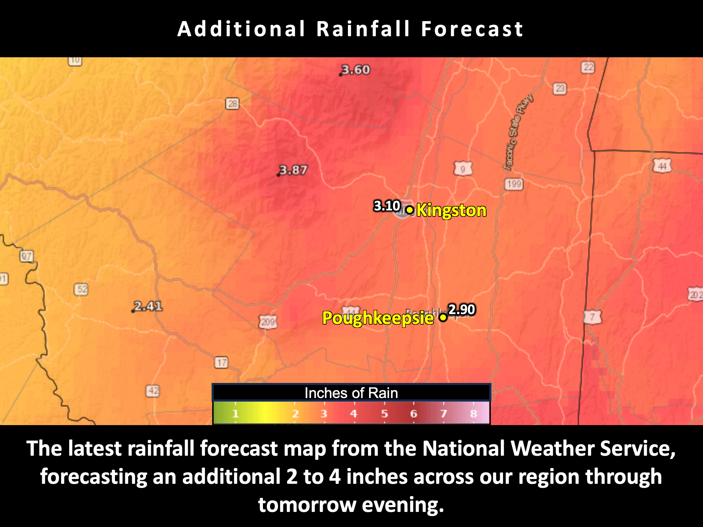

Another week, another round of rain
School Forecast
through Friday December 22nd
Last updated: 10:30PM Sunday December 17, 2023
| 0% (Nope) |
|---|
| 0% (Nope) |
|---|
| 0% (Nope) |
|---|
___________________
10:30PM Update
As was the case exactly one week ago, an expansive storm system is currently moving uo the coast. The current storm system is carrying with it a significant amount of moisture, which will result in heavy rain and minor flooding through tomorrow.

As of 10:30PM, local weather stations in High Falls and Red Hook indicate that just over half an inch of rain has fallen in the Kingston area since about 3PM. Current radar indicates that the heavest rainfall is still located well to our south over southern Pennsylvania. Radar trends and computer simulations both suggest that rainfall will persist steadily overnight with the heaviest rain falling between about 3AM and 7AM Monday. Rainfall rates of over half an inch per hour will be possible during this time, which is very heavy rain. By the time rain ends around midday, total rain accumulations around Kingston will be around 3 inches with higher amounts
Currently the National Weather Service forecast for the Mohonk Mountain house in New Paltz calls for them to receive an additional 3 to 3.5 inches of rain by tomorrow afternoon. This would make tomorrow December 18th the wettest calendar day of 2023 for Ulster County, surpassing the 2.97 inches that fell on September 25th. Ulster County only averages one calendar day per year with 3+ inches of precipitation. Even more astounding is that since 1896, only four days calendar days in December have received over three inches of rain - the last time being in 2000.
Due to the heavy rainfall, areas of flooding are likely throughout Ulster County. Localized flooding will be most likely toward the Catskills where some areas will approach five inches of rain. Rondout Creek is currently forecast to rise to moderate flood stage by tomorrow afternoon while both the Hudson River and Esopus Creek are expected to crest at minor flood stage. For these reasons, some school districts may have impacted schedules tomorrow, however, in the past decade Kingston has only altered its schedule once due to just flooding - that was April 8, 2022 when 4 to 6 inches of rain fell across the district.
Next Update:
Monday Evening
-Ethan
KingstonSnows | Kingston, New York
Website built by Ethan Burwell